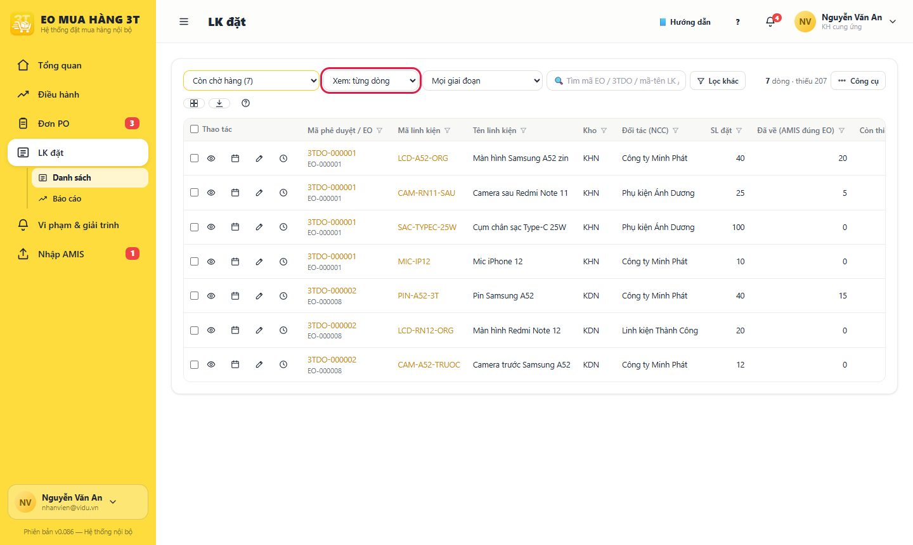

📦 Hướng dẫn cho Kho
Nhân viên kho / kho vận. Bạn xem mọi đơn; số đỏ, việc cần làm và lỗi tính theo kho bạn phụ trách (Admin gán).
1. Xem hàng sắp về kho mình
- Vào LK đặt → nhóm Dự kiến về tuần này hoặc Dự kiến về tuần sau.
- Lọc kho: phễu ở cột Kho (tick kho của bạn), hoặc Lọc khác.
- Xem cột Ngày dự kiến / SL thiếu để chuẩn bị nhận hàng.

2. Đơn đặt bởi kho
Kho được lập PO (phòng ban kho vận tự gán kho cho các dòng) — làm như Người đặt hàng › Tạo PO. PO kho lập thì kho chịu các quy tắc R1 / R3 / R4: nhập ngày dự kiến, thúc NCC, giải trình — xem ngày dự kiến, push NCC, giải trình.
3. Hàng về thiếu / sai
- Ngày hàng về lấy từ phiếu nhập kho AMIS (kế toán nhập) — app không có ô nhập tay.
- Về thiếu: dòng vẫn mở, vẫn bị theo dõi đến khi về đủ hoặc người đặt kết thúc sớm.
- Thấy phiếu AMIS khớp sai mã / sai PO: báo kế toán sửa ở Nhập AMIS.

4. Giải trình khi lỗi do kho
Lỗi do kho (nhận hàng chậm, nhập AMIS muộn…) → người giải trình chọn Ai = Kho. Bạn có thể tự giải trình: LK đặt → ✏️ ở cột Thao tác, hoặc Vi phạm & giải trình → Của tôi.